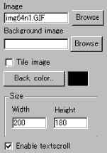
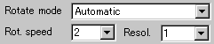
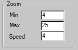
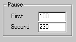
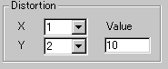

|
This applet can zoom and rotate (eventually distorted)
any GIF or JPG image. The only requirement is that the image loaded
must be equally sized to one of the powers of 2 (64x64 pixel, or
32x64, 128x128, ...).
[For more technical
information about the available parameters, click here.]
Most parameters are self-explanatory and you can
always see brief description of each parameter by moving the mouse
pointer over the wizard.
 |
First, enter the image file path you want to rotate and set
the applet size. Next, if you check "Tile image"
option, the image will be tiled across the background, otherwise,
you need to set either "Background colour"
or "Background image". Then
you decide if textscroll function is enabled by checking "Enable
textscroll" box.
|

We have provided 6 types of rotation mode, i.e.:
1) Zoom and Rotate
2) Rotate only
3) Zoom only
4) Distort only
5) Zoom and Distort
6) Automatic show: ZoomOnly, then Zoom&Rotate, then Zoom&Distort |
After you select one of them, set the rotation
speed and the applet resolution, for which any integer R
(0<R<9) is valid. Bigger values for the rotation speed
result in faster rotation.
 |
Next, there are three
zoom factors. Minimum and Maximum zoom factors
are roughly equivalent to min. and max. zoom rate. |
So, it's recommended to place values which show
large difference. For example, 4 and 30 rather than 20 and 21, and
so on. Zooming speed is clear. It stands literally for zooming
speed!
 |
Pause parameters are enabled only when
you have selected "Automatic" mode. |
You can control two pause length. The first pause
length in milliseconds appears between "zoom only mode"
and "zoom and rotate mode", while the second one
is for the in-between "zoom and rotate mode" and
"zoom and distortion".
 |
Finally, come the three distortion
parameters. |
You can control horizontal "X"
and vertical "Y" distortion factors (which take
values between 0 and 8) and the overall distortion power at "Distortion
value" (1...255).
Proceed to the textscroll
menu if you have checked the textscroll box; otherwise go to
the expert menu.
|